Про цей вид спорту:
Основу змішаних бойових мистецтв складають класичні види боротьби (греко-римська і вільна боротьба, дзюдо, джиу-джитсу, тощо) і класична ударна техніка (бокс, муай тай та кікбоксинг). На відміну від класичних бойових мистецтв, які у своїй більшості походять із країн Сходу, змішані бойові мистецтва не несуть в собі духовного або релігійного навантаження, віддаючи перевагу спортивно-прикладному аспекту.
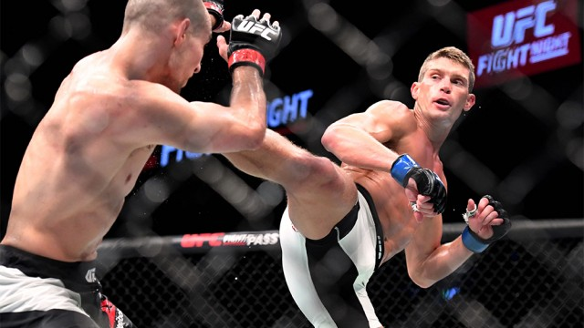Як цей вид спорту набирав популярність
Уніфіковані і ефективні змішані бойові мистецтва стають дедалі популярнішими в сучасному світі. Особливу популярність мають відкриті змагання з MMA — бої змішаного стилю, чи «бої без правил». Найпопулярнішими серед регулярних змагань є Абсолютний бійцівський чемпіонат, Чемпіонат Strikeforce, Бійцівський чемпіонат PRIDE (до розвалу у 2007 році), Бійцівський чемпіонат RINGS (до розвалу у 2002 році) та інші.
В Україні
В Україні належать до змішаних єдиноборств — панкратіон, мікс-файт та фрі-файт. 19 листопада 2004 року Міністерство України у справах сім'ї, молоді та спорту офіційно визнало фрі-файт як вид спорту. З 2001 року за правилами фрі-файта у Київському Палаці спорту проводиться Турнір Честі «Зірка Пересвіту». У 2018 році було створено аматорську Федерацію змішаних бойових мистецтв України (UF MMA)[3], президентом якої став Володимир Тесля.
Про UFC
Спортивна організація, що базується в Лас-Вегасі, США, і проводить бої зі змішаних єдиноборств (також відомі як ММА - від англ. Mixed Martial Arts) по всьому світу. Спочатку UFC замислювалася творцями як одноразовий турнір, що дозволяє визначити найефективніше бойове мистецтво і нагадувала ранні бразильські змагання з валу-тудо. Успіх першого турніру, що відбувся в Денвері в 1993 році, став мотивом проведення нових змагань, проте під тиском влади штату Невада компанії довелося суттєво змінити правила, перетворивши змагання зі видовища на спорт.
У 2001 році, після придбання компанії власниками мережі казино «Station Casinos», Лоренцо та Френком Фертітта та призначення на посаду президента організації колишнього промоутера боксу Дейни Уайта, UFC розпочала агресивну експансію до Сполучених Штатів та інших країн.
Починаючи з 2006 року, турніри UFC (внаслідок скасування офіційних турнірних сіток, нині відомі як події або евенти від англ. event), складають значну конкуренцію професійному боксу на платному телебаченні: кількість замовлень платних трансляцій нерідко перевищує мільйон. У 2007 році, після викупу головного конкурента, японської організації Pride Fighting Championships, UFC перетворилася на одного з найбільших у світі промоутерів боїв зі змішаних єдиноборств.
Станом на 2012 рік під егідою UFC виступає більшість бійців ММА, які займають лідируючі позиції у світових рейтингах, а бої транслюються у 130 країнах 20 різними мовами.
Чемпіони у своїх вагових категоріях UFC
Важка вага (Heavyweight)
Френсіс Нганну
Франко-камерунський боєць змішаних єдиноборств, який виступає під егідою UFC у важкій ваговій категорії. Чинний чемпіон UFC у важкій вазі. Займає четвертий рядок серед бійців незалежно від вагової категорії. Є володарем рекорду на автоматі, що вимірює силу удару в науковому центрі UFC з ударом в 1,3 тонни.
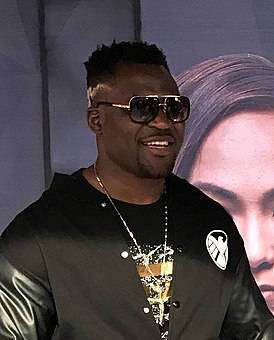Напівважка вага (Light heavyweight)
Гловер Тейшейра
Бразильський боєць змішаних бойових мистецтв, який виступає під егідою UFC у напівважкій ваговій категорії. Чинний чемпіон UFC у напівважкій вазі. Займає 9 рядок офіційного рейтингу UFC серед найкращих бійців незалежно від вагової категорії
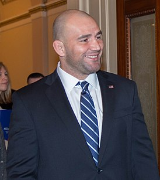Середня вага (Middleweight)
Ісраель Адесанья
Новозеландський боєць ММА та кікбоксер нігерійського походження, представник середньої вагової категорії. Виступає на професійному рівні починаючи з 2011 року, відомий за участю у турнірах бійцівських організацій UFC, Glory, Kunlun Fight та ін. Чинний чемпіон UFC у середній вазі. Займає 3 рядок офіційного рейтингу UFC серед найкращих бійців незалежно від вагової категорії
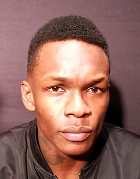Напівсередня вага (Welterweight)
Камару Усман
Негерійський боєць змішаних бойових мистецтв нігерійського походження, який виступає під егідою UFC. Переможець бійцівського реаліті-шоу The Ultimate Fighter 21. Чинний чемпіон UFC у напівсередній вазі. Станом на квітень 2022 року посідає перший рядок офіційного рейтингу UFC серед найкращих бійців незалежно від вагової категорії.
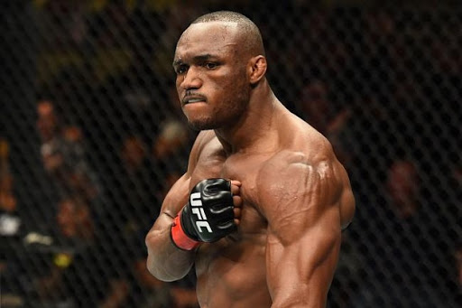Легка вага (Lightweight)
Чарльз Олівейра
Бразильський боєць змішаних єдиноборств, представник легкої та напівлегкої вагових категорій. Почав професійну спортивну кар'єру у 2008 році виступом у регіональних промоушенах, з 2010 року виступає у бійцівській організації Ultimate Fighting Championship. Чинний чемпіон UFC у легкій вазі. Займає п'ятий рядок офіційного рейтингу UFC серед найкращих бійців незалежно від вагової категорії
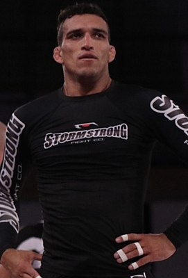Напівлегка вага (Featherweight)
Олександр Волканівський
Австралійський боєць змішаного стилю, представник напівлегкої вагової категорії. Виступає на професійному рівні починаючи з 2012 року, відомий за участю у турнірах бійцівської організації UFC. Чинний чемпіон UFC у напівлегкій вазі. Займає 2 рядок офіційного рейтингу UFC серед найкращих бійців незалежно від вагової категорії
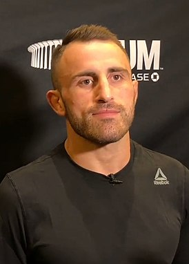Легша вага (Bantamweight)
Алджамейн Стерлінг
Американський боєць змішаного стилю, представник найлегшої вагової категорії. Виступає на професійному рівні, починаючи з 2011 року. З 7 березня 2021 року є чинним чемпіоном UFC у найлегшій вазі. Став першим бійцем історія цієї організації, який отримав чемпіонський титул через дискваліфікації суперника. Займає 11 рядок офіційного рейтингу UFC серед найкращих бійців незалежно від вагової категорії
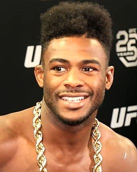Найлегша вага (Flyweight)
Дейвісон Фігейреду
Бразильський боєць змішаного стилю, представник найлегшої вагової категорії. Виступає на професійному рівні починаючи з 2012 року, відомий за участю у турнірах бійцівських організацій UFC та Jungle Fight. Дворазовий та діючий чемпіон UFC у найлегшій вазі. Займає 11 рядок офіційного рейтингу UFC серед найкращих бійців незалежно від вагової категорії
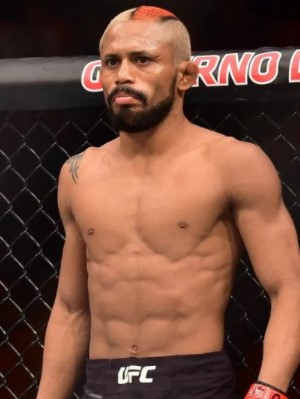Історія
у Греції
Панкратіон є найстарішим відомим стилем бою без зброї, що нагадує сучасні ММА. Стародавні греки вводили цю дисципліну в Олімпійські ігри 648 року до н. е. Грецький панкратіон потім трансформувався на більш жорстокий етруський і давньоримський «панкратіум». Бої в цьому стилі демонструвалися в Колізеї, а статуї видатних бійців були встановлені в Римі та інших містах Італії.
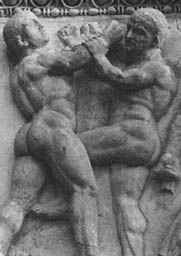у Азії
Наприкінці 60-х років концепція об'єднання елементів різних бойових мистецтв була популяризована Брюсом Лі. Філософія, розроблена Брюсом Лі, мала назву «Джиткундо», і одним із головних її принципів було вміння бійця успішно адаптуватися під будь-який стиль. Вчення Лі і особливо фільми за його участю вплинули на ММА настільки, що в 2004 році президент UFC Дейна Уайт назвав Лі «батьком ММА». У свою чергу в Японії у першій половині XX століття виникли нові напрямки бойових мистецтв змішаного типу, такі як кадзюкембо та карате Годзю-рю.
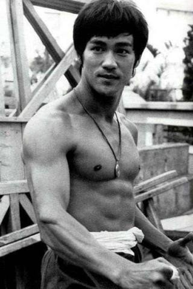у СРСР
У СРСР 1938 року виникає самбо як система навчання прийомам самооборони представникам силових структур. При цьому дане єдиноборство поділяється на два головні напрямки: «спортивний» та «бойовий». «Спортивне» самбо є видом боротьби з великою кількістю кидків і больових прийомів, схоже з дзюдо. «Бойове» самбо, крім прийомів боротьби, використовує ударну техніку руками і ногами, нагадуючи ММА по арсеналу своєї техніки.
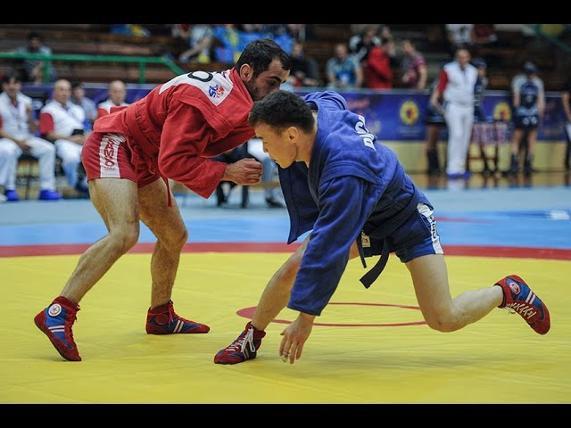